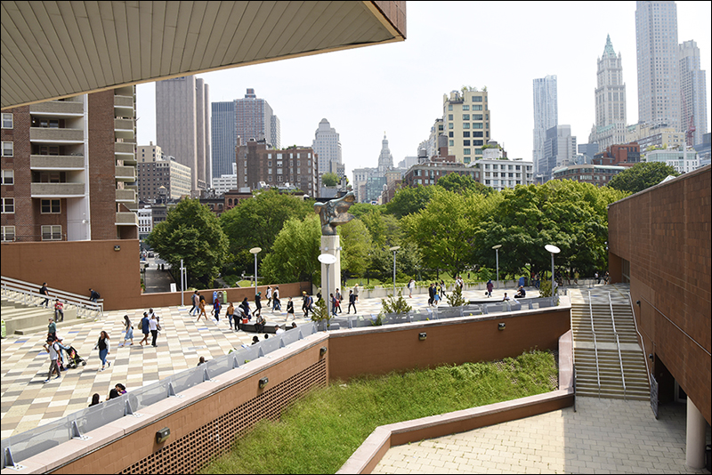

Borough of Manhattan Community College
Animation (A.S.)
The Animation and Motion Graphics program provides students with the fundamentals of two- and three-dimensional (2D and 3D) animation, motion graphics, and special effects for advertising campaigns, video games, movies, and television.